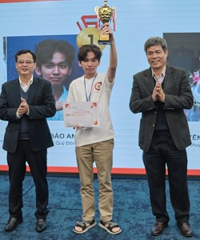
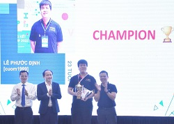
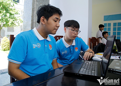

GƯƠNG MẶT TIÊU BIỂU
| Vô địch LQDOJ CUP 2022 thuộc về học sinh Lê Ngọc Bảo Anh lớp 12A5 trường THPT chuyên Lê Quý Đôn: | |
|---|---|
|  | Cuộc thi nhằm thúc đẩy phong trào học tập, rèn luyện và nâng cao kỹ năng làm bài trong việc học tập môn Tin học của học sinh THPT chuyên trên cả nước và sinh viên các trường đại học ở miền Trung. Đồng thời tạo cơ hội giao lưu, trao đổi phương pháp học tập và giảng dạy của học sinh và giáo viên; cũng như chuẩn bị tốt cho Kỳ thi học sinh giỏi Quốc gia THPT môn Tin học năm học 2022 – 2023. |
| Cựu học sinh trường THPT chuyên Lê Quý Đôn, Đà Nẵng giành Cup VNOI lần đầu tiên | |
|  | Siêu lập trình viên Lê Phước Định, quê quán Hội An (Quảng Nam), cựu học sinh trường THPT chuyên Lê Quý Đôn (Đà Nẵng), hiện làm việc tại Công ty Quora, Texas, Hoa Kỳ đã trở thành chủ nhân đầu tiên của chiếc Cup VNOI danh giá, tại kỳ thi lập trình thi đấu 2022 do Câu lạc bộ Olympic Tin học Việt Nam khởi xướng, tổ chức. |
| Hai nam sinh Đà Nẵng giành giải Nhất tin học trẻ toàn quốc | |
|  | Dự án phần mềm nhận dạng cử chỉ trong dạy học cho học sinh khuyết tật vận động ở cấp tiểu học, là một trong 5 giải Nhất hội thi tin học trẻ toàn quốc lần thứ 28. |
| Chân dung các thủ khoa tại Đà Nẵng | |
| Kỳ thi tốt nghiệp THPT năm 2022 vừa qua, thủ khoa các khối A, A1, B, C và D tại Hội đồng thi Đà Nẵng đều có mức điểm tổng trên 28 điểm. Nét chung của các thủ khoa năm nay là khả năng tự học cao, phân bổ thời khóa biểu học tập khoa học, hợp lý, chinh phục ước mơ. | |
| Thủ khoa khối B toàn quốc với 3 điểm 10 tuyệt đối | |
| Với điểm 10 ở cả 3 môn Toán, Hóa, Sinh, Nguyễn Lê Vũ lớp 12A2 Trường THPT chuyên Lê Quý Đôn - Đà Nẵng là thủ khoa khối B và cũng là thủ khoa duy nhất đạt điểm tuyệt đối trong các thủ khoa của các tổ hợp xét tuyển đại học. | |